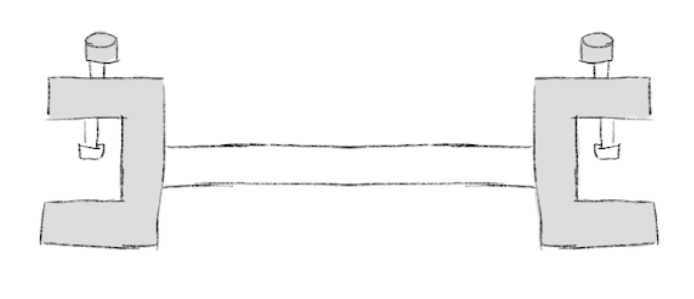
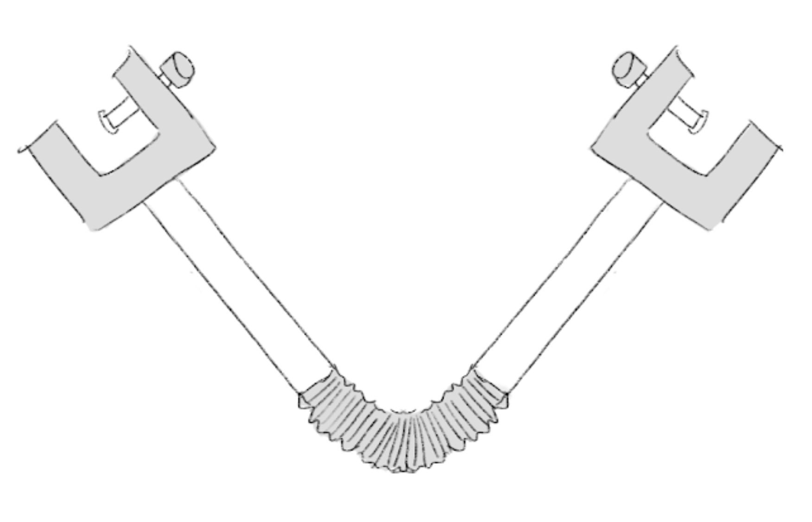
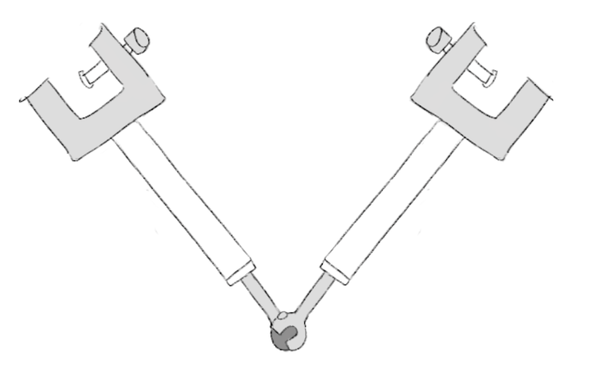

Advanced STEM II
The STEM II class is taught by Dr. Crowthers. In STEM II, Mass Academy juniors embark on 4-month long group assistive technology projects for clients at Seven Hills. Although this year we had to do most of STEM II remotely, it was a memorable experience and thanks to Dr. C we were able to make physical prototypes of our proposed solutions. Throughout this project, we learned how to CAD, 3D print our models, and cater to our clients' needs.
Drum Frame Mount
Our team worked on building a drum frame mount for individuals with limited hand mobility. We sought guidance from Ms. Ritter at Seven Hills, the director of the music department for our clients. You can find more information on our project below. We made an instructables for our design as well.
Problem
Music is an essential part of many peoples’ lives and is often an indispensable part of their work, education, or therapy. Music provides significant health benefits such as lessening anxiety and stress, boosting confidence, and even improving cognitive recognition (Pfizer Medical Team, 2017). Moreover, playing music is known to provide useful therapy, often being used to treat conditions such as cerebral palsy, Parkinson’s disease, and other cognitive diseases (Alfredo et al. 2015). Music therapy is often used to treat patients with limited hand mobility (Alfredo et al, 2015). However, many instruments are not geared for individuals with limited hand mobility. For instance, Individuals with loose handgrip or limited mobility may find it difficult to grasp onto a drum and play it at the same time. In order to ensure that musicians with limited hand mobility can play the drums comfortably, it is imperative to develop assistive technology that can position a drum in front of the user and attach it to a table or wheelchair. Therefore, the goal of this project is to design a drum frame mount that attaches to both tables and wheelchairs to enable individuals with limited hand mobility or loose handgrip to comfortably play the drum.
Approach
We began by conducting research on the health benefits of playing music for people with limited hand mobility and the main competitors for an accessible drum frame. Based on the needs of the client and the pros and cons of the competitors, we came up with 3 initial design concepts: a telescoping adjustable drum holder, two-way G-clamps, and a miniature table. After talking with the client and evaluating our designs, we decided to investigate the two-way G-clamp design. One side would clamp on to the table or wheeelchair while the other clamp would hold the drum. We up with 3 prototypes: a simple two-way clamp with no pivot, a two-way clamp with a metal hose neck, and a two-way clamp with a slotted ball hinge connector. We were able to 3D print these designs and perform studies to test their strength and resilience under tension. Through design studies, we found that the metal hose neck was not stable enough and that we needed to make changes to our clamp screw. Our final design utilized the simple two-way G clamp with no pivot. You can find images of our prototype designs and final prototype below.
To the left is the simple two-way G-clamp design with a straight rod connector. To the right is the design with a metal hose neck connector.
 To the left is the design with a slotted ball hinge connector. To the right is the final prototype that we built and tested.
